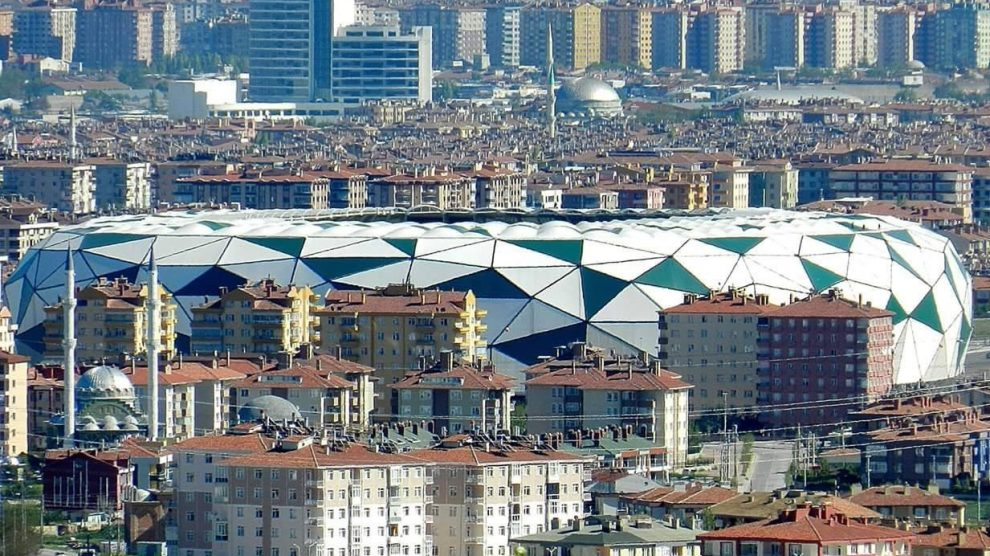

KONYA’yı Tanıyalım Konya, Türkiye'nin yüz ölçümü bakımından en büyük ili ve en kalabalık yedinci şehridir. 31 ilçeden oluşan Konya'da TÜİK'in 2013 verilerine göre 2.079.225 kişi yaşamaktadır. Trafik plaka numarası 42'dir. 1875'te kurulan Konya Belediyesi, 1987'de çıkarılan 3399 sayılı yasa gereğince "büyükşehir" statüsüne kavuşmuş olup 1989'dan beri belediye hizmetleri bu statüye göre yürütülmektedir. 2014'te 6360 sayılı kanun ile büyükşehir belediyesinin sınırları il mülki sınırları olmuştur.
Ekonomik açıdan Türkiye'nin gelişmiş kentlerinden biri olan Konya doğal ve tarihsel zenginlikleriyle de önem taşır. Dünyanın en eski yerleşimlerinden biri olan Çatalhöyük, 2012 yılında UNESCO Dünya Miras Listesi'ne alınmıştır. Şehir Anadolu Selçukluları’nın ve Karamanoğulları’nın başkentliğini yapmıştır. Türkiye'nin en önemli sanayi kentlerinden olan Konya Anadolu Kaplanları arasında yer alır. Şehrin futbol takımı TORKU Konyaspor'dur.
Konya’nın simgeleri arasında Mevlana Müzesi (Kubbe-i Hadrâ) ve çift başlı kartal öne çıkar. Tarihçe Konya ili, MÖ 7 bin yılından beri yerleşim yeri olmuş, pek çok medeniyete beşiklik etmiştir. Konya'nın, ülkemizin en eski yerleşim merkezleri arasında yer aldığı söylenebilir. Çumra Çatalhöyük, sadece ülkemizin değil; dünya ölçüsünde yemek kültürünün ilk defa başladığı, tarımın yapıldığı, ateşin kullanIldIğI, yerleşik hayata geçildiği, vahşi hayvan saldIrIlarIna karşI ortak savunmanIn yapIldIğI merkez olarak tanInIr. Çatalhöyük, Neolitik; Erbaba ve Karahöyük, Kalkolitik; Alaeddin Tepesi, Eski Tunç Devri merkezleridir
Tarih devirlerinde Hititler ve LidyalIlar MÖ 6. YüzyIlda, Persler MÖ 4. YüzyIlda, Büyük iskender, Selevkoslar, Bergama krallIğI MÖ 2. YüzyIlda, Roma MS 395'te Konya ve çevresine hakim oldular. 7. yüzyIl başlarInda Sasaniler, aynI yüzyIlIn ortalarInda Muaviye komutasIndaki Emeviler, şehri geçici olarak işgal ettiler.